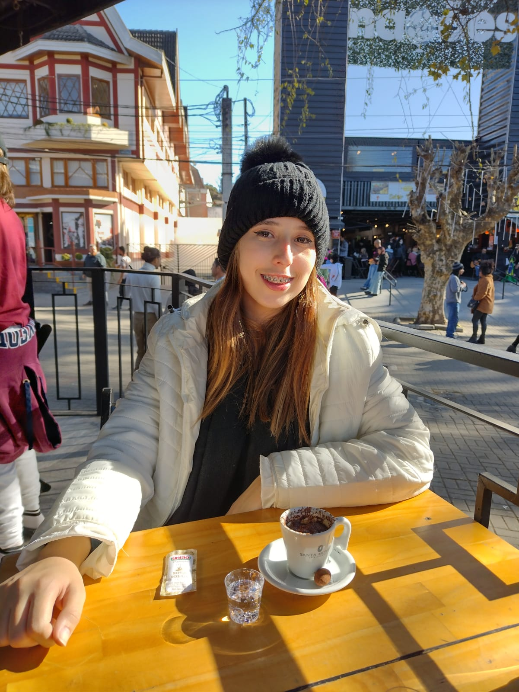

Eduarda Gonzaga

Sobre mim
Recém graduada do ensino médio integrado ao técnico em administração de empresas, em uma escola competitiva, designada como representante de turma durante o primeiro ano. Busco desenvolver minhas habilidades em uma primeira oportunidade formal no mercado, oferecendo um skill set com enfoque em gerência e organização. Média Geral: MB/B
Experiência Profissional
Jan 2022 - Marc 2022
Estágio de Férias - Colégio Apolo
Meu currículo.